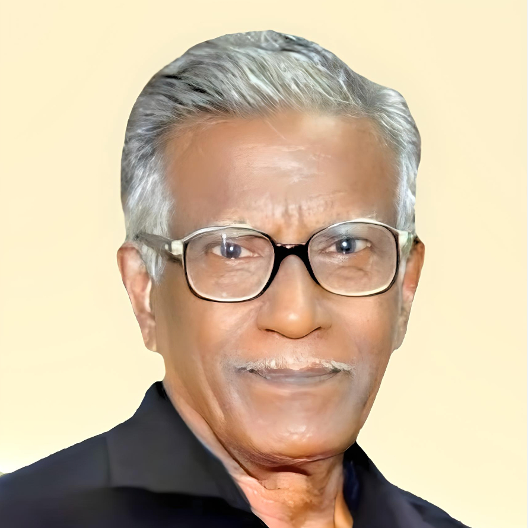

"A life well lived leaves behind a beautiful legacy."
My father was a deeply committed individual. Despite his devout nature, during his youth, he was greatly influenced by Periyar's ideologies. He actively participated in many gatherings and became a devoted follower of Periyar. From a young age, he served as Periyar’s disciple and later also worked with Maniammaiyar. Even in challenging circumstances, when time was scarce, he tirelessly worked to ensure the success of these gatherings. He also worked with Asiriyar and remained closely associated with them for nearly 70 years.
At home, my father did not accept the religious devotion of others. Even after marrying my mother, who initially desired to remain deeply religious, he stood firm in his beliefs and did not allow her the freedom to practice them. Instead, he insisted that she adopt his ideologies. Over time, my mother gave up her own beliefs and started following my father's principles. She has worked alongside him for nearly 60 years.
Throughout his life, my father never turned to God, even in times of illness or distress. This always amazed me. While many might seek solace in religion during difficult times, my father never did. From the moment he embraced his beliefs until his last breath, he remained steadfast in Periyar’s ideologies.
Today, in memory of my father, I respectfully request Asiriyar K. Veeramani and Minister M. Subramaniyan to inaugurate the unveiling of his portrait.